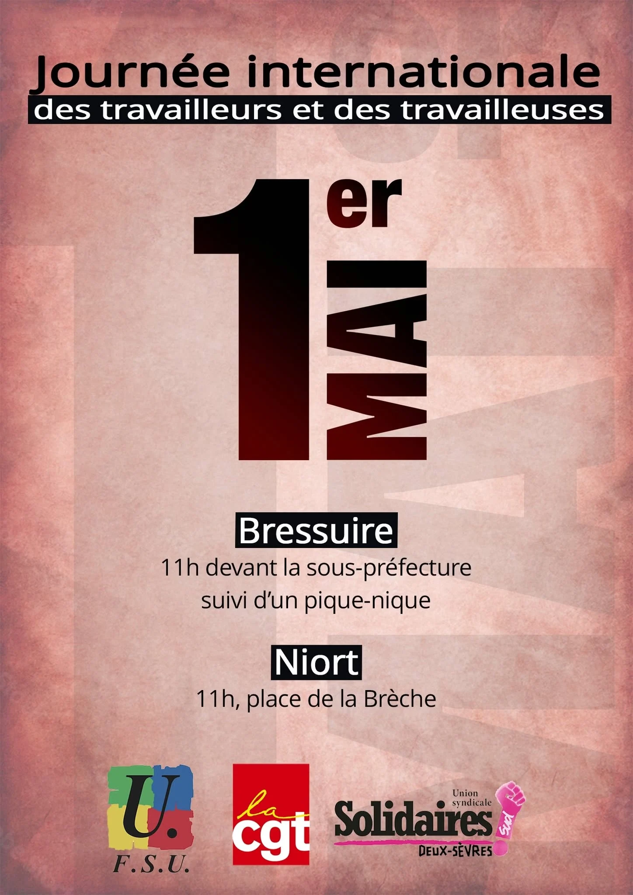

Annonce syndicale relayée
Le Festitaff à Thouars, puis le 1er Mai à Niort et Bressuire
Date de mise à jour indiquée par Facebook · 25 avril 2024
Repères éditoriaux
Nous avons relayé l’invitation de la CGT au Festitaff du 27 avril à Thouars, puis aux rendez-vous intersyndicaux du 1er Mai à Niort et à Bressuire. Les deux affiches donnent les lieux et les horaires annoncés.
Texte de la publication · CGT 79 Deux-Sèvres
Bonjour la CGT à l'honneur de vous inviter pour deux événements structurants de notre organisation !
Le Festitaff : samedi 27 avril 2024 de 16h à 2h à l' orangerie du château de Thouars 79100
Autour de la journée internationale des droits des travailleurs, un festival de la CGT, cette année le thème c'est "le temps libre", affiche jointe !
Le 1er mai, Journée Internationale de lutte pour les Droits des Travailleurs(euses)
Le 1er mai doit être un moment fort de notre militantisme pour revendiquer nos droits :
Augmentation générale des salaires, protection de l'assurance chômage, protection de la fonction publique ! etc.
Deux Rassemblements intersyndicaux (CGT, FSU, Solidaires) en Deux Sèvres :
1er MAI :
À Niort
11h place de la Brèche
À Bressuire
11h devant la sous préfecture, (le rassemblement sera suivi d'un Pique Nique, amenez votre panier)

Sources
CGT 79 Deux-Sèvres · publication relayée par le PCF 79 · bibliothèque Facebook · AR-0002-FB-01414
À lire aussi · À Niort, le 1er Mai pour l’emploi, les salaires et les services publics